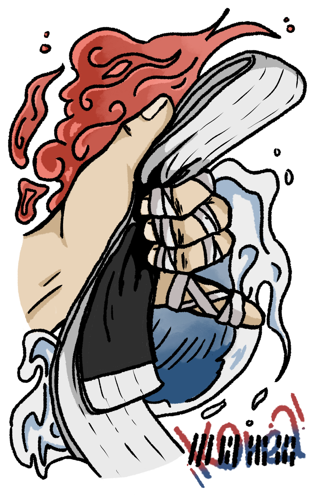
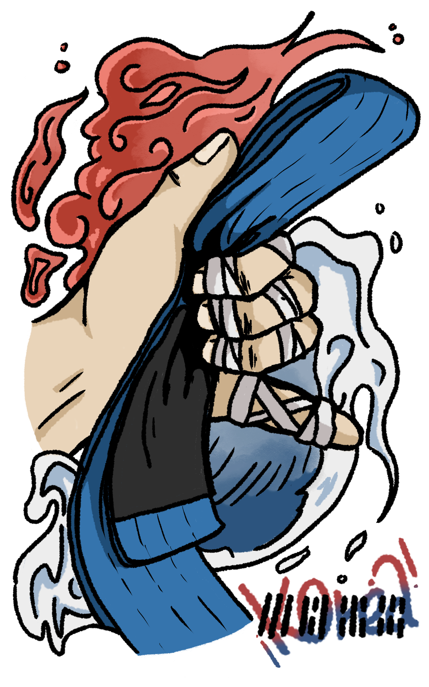
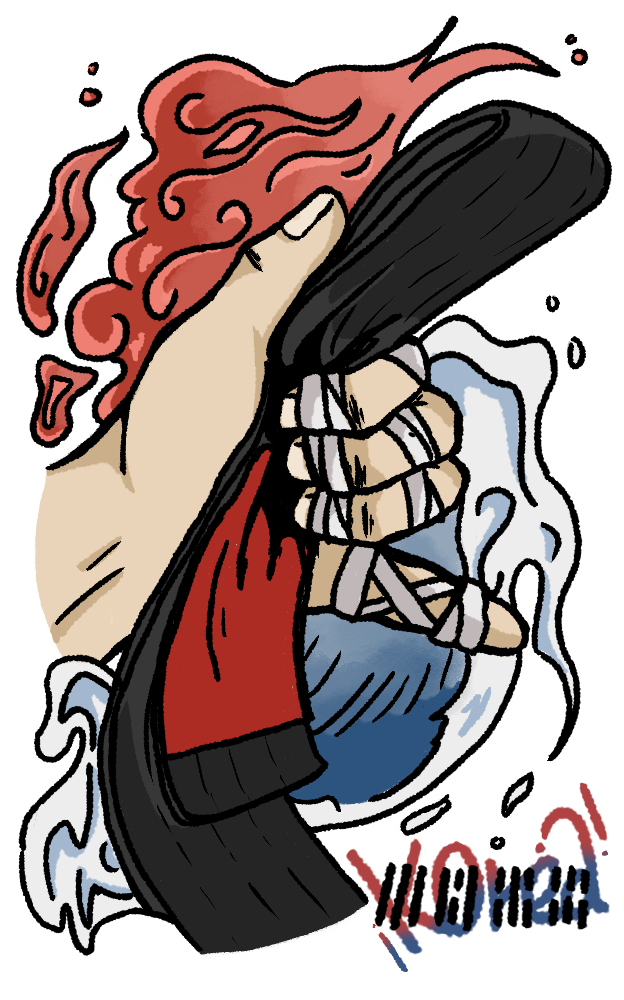

Art 01
Keyring Artwork





개인 일러스트 굿즈 제작 '태극 샤카 BON'
직접 그린 그림을 키링 굿즈로 확장한 작업
제작 의도
배경으로 사용되는 화염과 파도는 태극기의 빨강과 파랑을 모티브로 가져왔습니다. 음과 양의 조화, 이괘의 불과 감괘의 물을 함께 담아 전통적인 상징성을 표현했습니다.
상징 요소
오른쪽 하단의 건곤감리는 하늘, 땅, 물, 불을 의미하는 사괘를 활용한 요소입니다. 손에 쥔 도복과 움직이는 선을 통해 활동성과 에너지를 강조했습니다.
굿즈 활용
그림의 외곽선을 키링 제작에 어울리도록 정리하고, 작은 크기에서도 인상이 살아나도록 굵은 선과 명확한 색 대비를 사용했습니다.
Art 02
Patch Artwork

부착형 도안 제작 '호랑이 패치'
가방이나 도복에 부착할 수 있는 강렬한 패치 디자인
제작 의도
호랑이가 가진 용맹함과 당당한 기운을 정면 구도로 표현했습니다. 눈매와 이빨, 굵은 윤곽선을 강조해 작은 패치로 제작되어도 힘 있는 인상이 남도록 구성했습니다.
형태 설계
가방, 도복, 파우치 등에 부착하는 상황을 고려해 원형 배지형과 단독 얼굴형 두 가지 활용 방향을 함께 제작했습니다.
디자인 포인트
금색과 검정, 붉은 포인트 컬러를 사용해 전통적인 호랑이 이미지를 현대적인 그래픽 도안으로 정리했습니다.